conditional expansion
the preceding images functioned as an end (simply defined as such to maintain the integrity of the space, or lack thereof, that the point occupies). the problem formed now comes from the debasement of the point through the process of isolation.
assumption:
the point exists in a suppressed state. not through an act of domination, but through the relationship that the point has translated within. to define this as vulnerable implies the need for sympathy. passive observation implies the space for empathy.
expectation has always dictated the process of re-grounding. uncomfortable with the fact that an element of control is placed in the hands of the observer, initial response dictates the need for rigidity. the reaction is baseless in theory, but assumes itself to be the most logical structure which rests on false perceptions of linearity. there is a paradox that becomes apparent. stiffness that is refined. structure that is present. not in a set of parameters, but out of fear.
pdf found here.
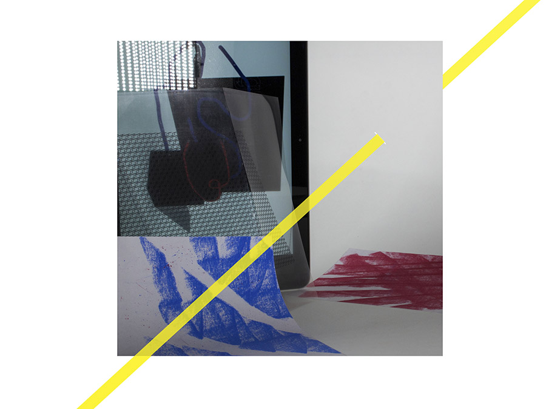
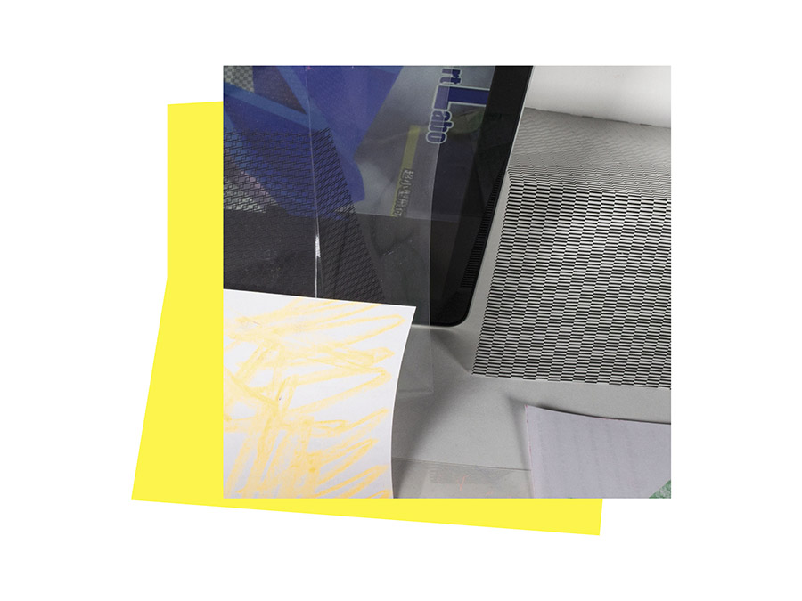
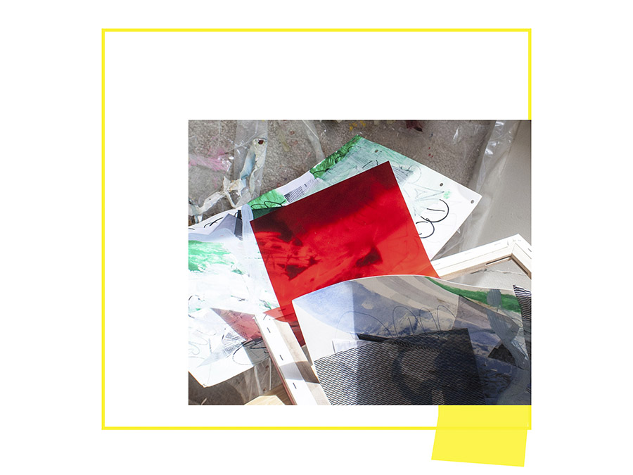
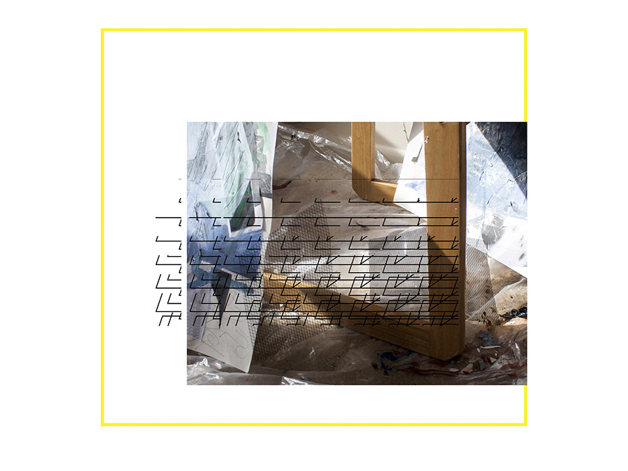
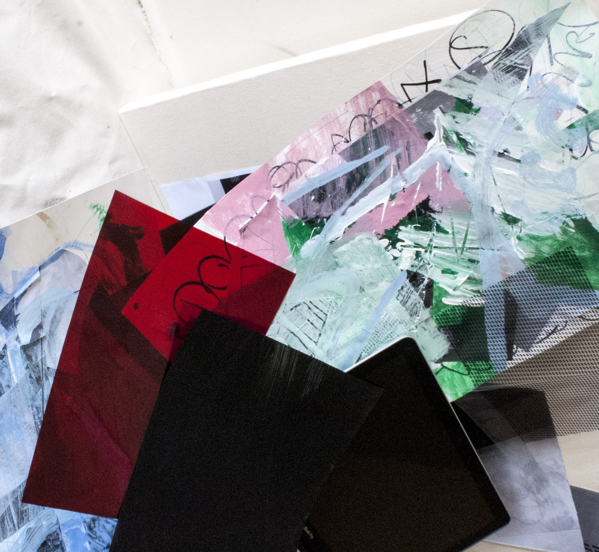
 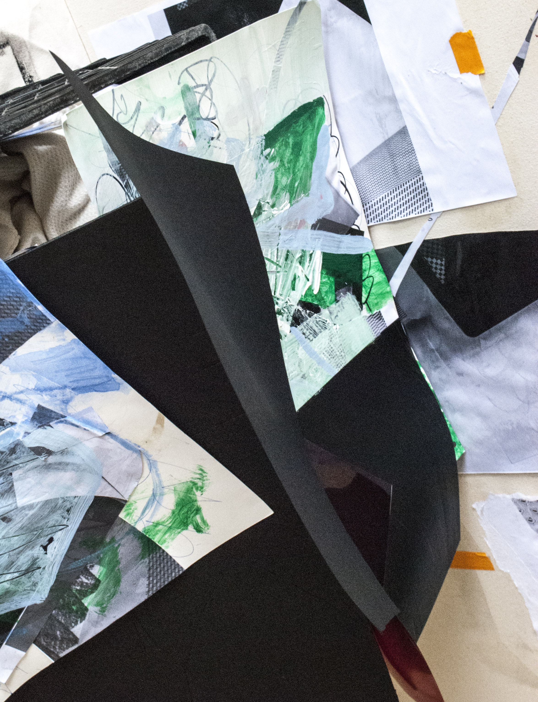
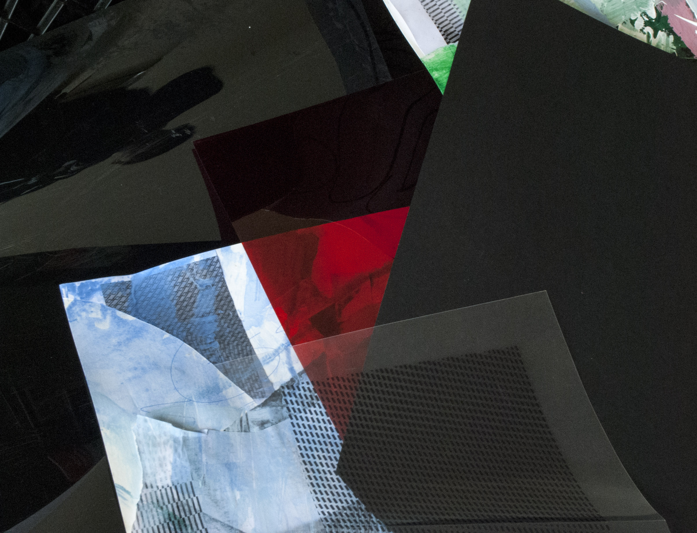
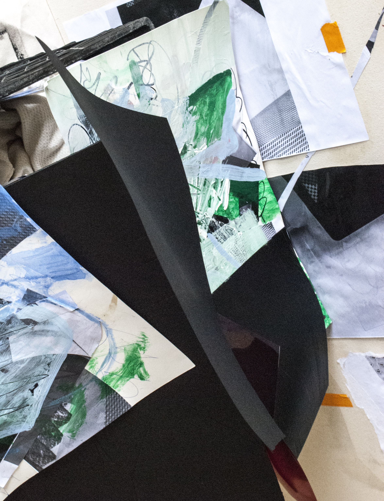
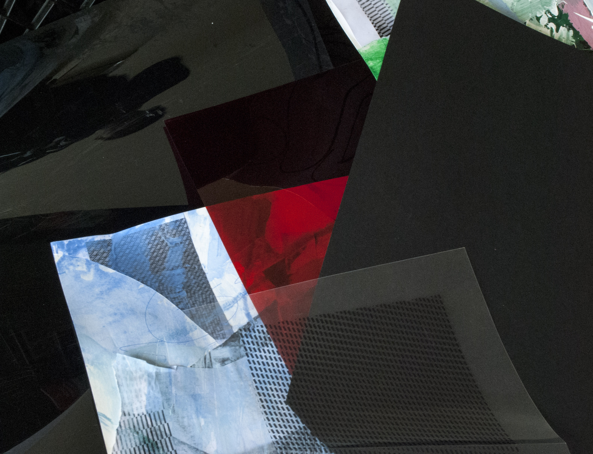
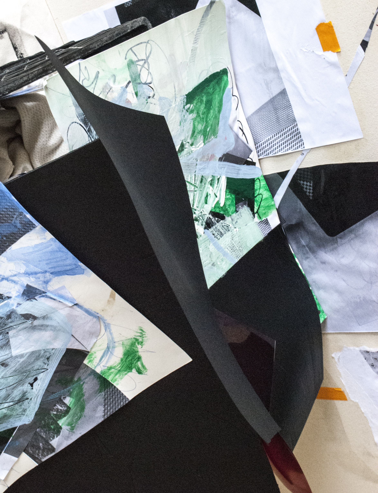
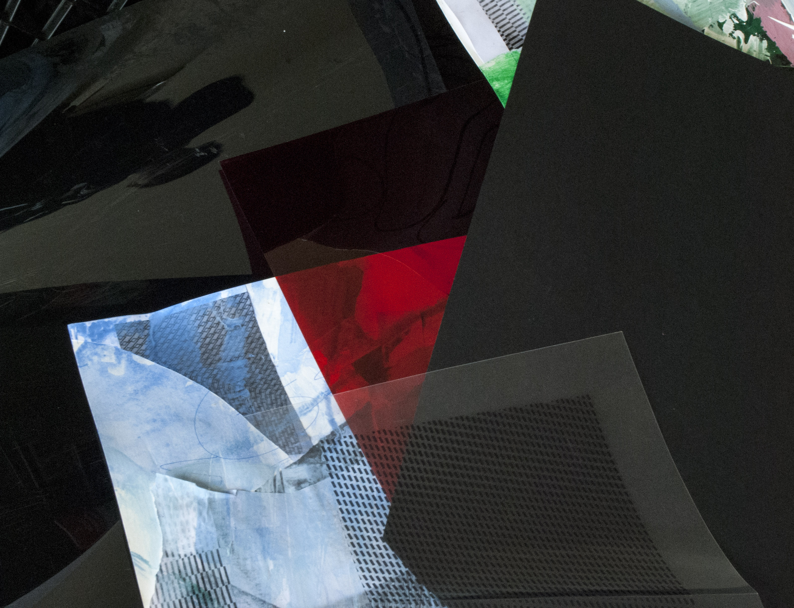